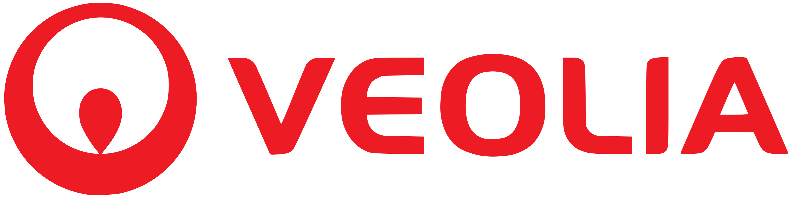
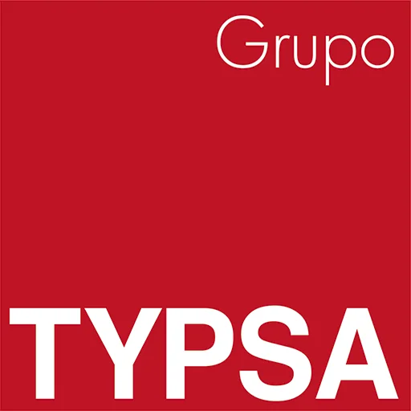
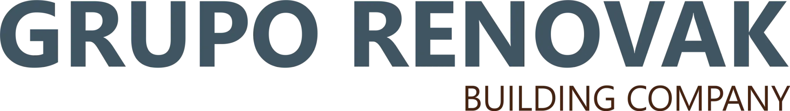
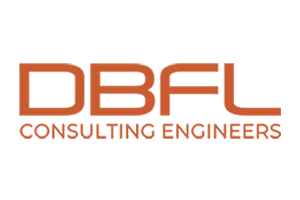

Ingeniero civil de proyectos con experiencia en España e Irlanda, especializado en abastecimiento, saneamiento, drenaje e infraestructuras hidráulicas. Mi trayectoria combina diseño, modelización hidráulica e hidrológica, planes directores, documentación técnica, supervisión de obras y coordinación de equipos multidisciplinares.

Veolia — Aquatec (AGBAR)
Civil Project Engineer
Periodo: noviembre de 2025 - actualidadUbicación: Murcia, España
- Asistencia técnica a diferentes Administraciones Públicas.
- Desarrollo de planes locales de abastecimiento y saneamiento.
- Preparación de proyectos constructivos de abastecimiento, saneamiento, drenaje e infraestructuras hidráulicas.
- Modelización hidráulica e hidrológica para el diseño y evaluación de redes.
- Elaboración de cálculos, planos, mediciones y documentación técnica.
- Uso de Autodesk Civil 3D, EPANET y SWMM.

TYPSA Group — Exceltic Consulting
Civil Project Engineer · Drainage Project Engineer
Periodo: octubre de 2023 - noviembre de 2025Ubicación: Valencia, España
- Desarrollo de proyectos internacionales de abastecimiento y drenaje.
- Diseño de redes de drenaje, saneamiento, distribución de agua y trazados viarios.
- Modelos hidrológicos con GIS, HEC-RAS y HEC-HMS.
- Modelización hidráulica con Civil 3D, Storm and Sanitary Analysis, SWMM y EPANET.
- Aplicación de normativa y especificaciones de proyectos de Arabia Saudí.

Grupo Renovak Building Company
Site Engineer
Periodo: febrero de 2022 - octubre de 2023Ubicación: Alicante, España
- Supervisión de obras de rehabilitación de edificios residenciales.
- Control de materiales, trabajos ejecutados y especificaciones.
- Seguimiento de métodos constructivos, costes y planificación de obra.
- Coordinación con dirección facultativa, clientes y subcontratistas.
- Supervisión del cumplimiento de la normativa de seguridad y salud.
AYMED Proyectos, Obras y Servicios S.L.
Civil Project Engineer
Periodo: marzo de 2020 - febrero de 2022Ubicación: Alicante, España
- Consultoría especializada en abastecimiento, saneamiento y servicios medioambientales.
- Redacción de planes directores con EPANET y SWMM.
- Apoyo a Ayuntamientos en análisis de rentabilidad y diseño de infraestructuras hidráulicas.
- Apoyo a empresas privadas en procesos de licitación pública mediante GIS.

DBFL Consulting Engineers Ltd.
Graduate Civil Engineer
Periodo: febrero de 2019 - diciembre de 2019Ubicación: Dublín, Irlanda
- Participación en proyectos residenciales, industriales y comerciales.
- Diseño de carreteras, abastecimiento, drenaje y sistemas SUDS.
- Inspecciones de obra y coordinación con clientes, contratistas y arquitectos.
Waterman Moylan Consulting Engineers
Junior Civil Engineer Technician
Periodo: enero de 2018 - febrero de 2019Ubicación: Dublín, Irlanda
- Participación en proyectos residenciales, industriales y comerciales.
- Diseño de carreteras, abastecimiento y drenaje.
- Desarrollo de soluciones SUDS y preparación de planos técnicos.
Vectalia
Internship Engineer
Periodo: noviembre de 2016 - mayo de 2017Ubicación: Alicante, España
- Apoyo en proyectos de licitación.
- Preparación de planos con AutoCAD.
- Redacción de informes e inspecciones de obra.
Procays Gestión Territorial
Internship Engineer
Periodo: abril de 2016 - julio de 2016Ubicación: Alicante, España
- Redacción de informes y registros técnicos.
- Preparación de planos con AutoCAD.
- Gestión de inspecciones de obra.